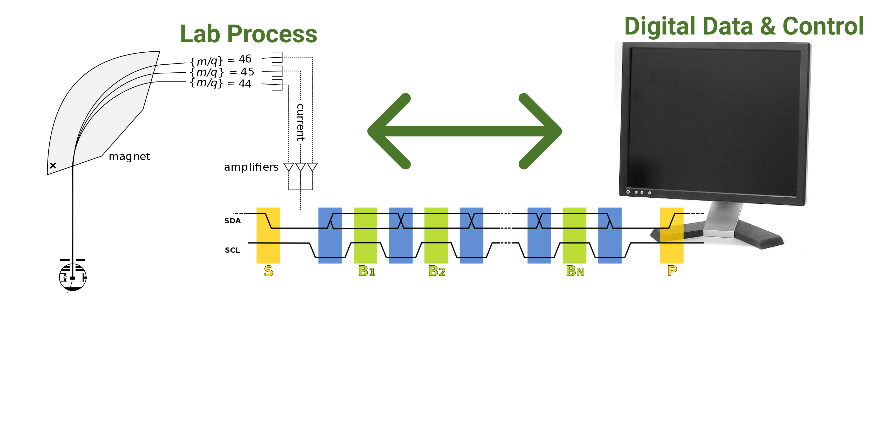
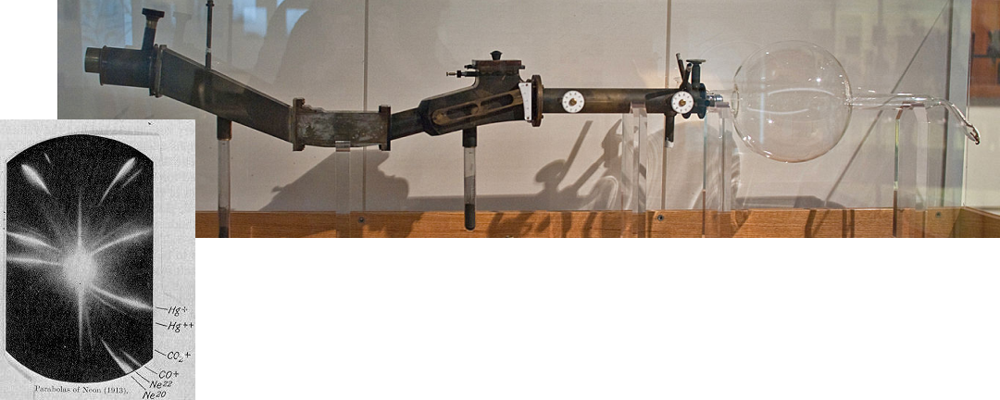
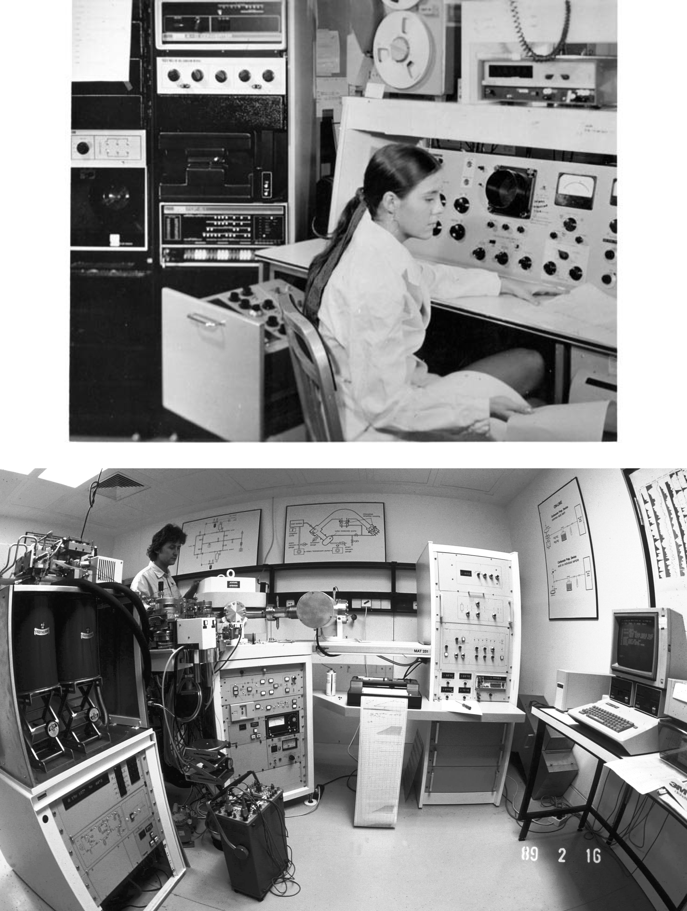

layout: true .footer[ - <div class="tooltip"><a href="/"><i class="fas fa-home"></i></a> <span class="tooltiptext">Go to C454 Main Page</span></div> - <div class="tooltip"><a href="/lectures"><i class="fas fa-chalkboard-teacher"></i></a><span class="tooltiptext">Go to Lecture List</span></div> - <div class="tooltip"><i class="fas fa-question"></i><span class="tooltiptext">Press <kbd>Shift</Kbd> + <kbd>?</kbd> for Navigation Tips!</span></div> ] --- class: center <!-- <h2 style = "text-align: left; font-weight: bold; margin-left: 40px; font-size: 54px; margin-top: 10px;">Environmental applications of ultratrace spectroscopy</h2> --> <!-- <h2 style = "text-align: left; font-weight: bold; margin-left: 40px; font-size: 54px; margin-top: 10px;">Ultratrace Spectroscopy for Environmental Analysis</h2> --> <h2 style = "text-align: left; font-weight: bold; margin-left: 40px; font-size: 42px; margin-top: 50px;">Computer Interfacing</h2> <h3 style = "text-align: left; font-weight: bold; margin-left: 40px;">(CHEM 454 / CHEM 554 / PHYS 454)</h3> <p style = "text-align: left; font-weight: thin; margin-left: 40px; font-size: 24px;">Instructor: Al Fischer, PhD</p> <center>  </center> --- # Welcome to Computer Interfacing - **Instructor:** Al Fischer, PhD - **Contact:** AP 342 / dfischer@wcu.edu - **Office Hours:** By appointment (see syllabus for a link to schedule) --- # What is this class about? <center> <img src="https://www.wcu.edu/WebGraphics/CHPH_inst_flame-aa.jpg", style="margin-top: 10px; height: 450px;"> </center> --- <center> </center> --- <center>  </center> .image-credit[Jeff Dahl via[ Wikimedia Commons](https://en.wikipedia.org/wiki/History_of_mass_spectrometry#/media/File:Early_Mass_Spectrometer_%28replica%29.jpg), [CC-BY-SA 3.0](https://creativecommons.org/licenses/by-sa/3.0/deed.en)] --- <center> <img src="https://upload.wikimedia.org/wikipedia/commons/8/8d/Fenn_ESI_Instrument.jpg", style="margin-top: 10px; height: 600px;"> </center> .image-credit[Jeff Dahl via[ Wikimedia Commons](https://commons.wikimedia.org/wiki/File:Fenn_ESI_Instrument.jpg), [CC-BY-SA 3.0](https://creativecommons.org/licenses/by-sa/3.0/deed.en)] --- <center>  </center> .image-credit[Daniel Mietchen and Hannes Grobe via Wikimedia Commons, [CC-BY-SA 2.0](https://creativecommons.org/licenses/by-sa/2.0/deed.en) and [CC-BY-SA 2.5](https://creativecommons.org/licenses/by-sa/2.5/deed.en)] --- <center> </center> .image-credit[Daniel Mietchen and Hannes Grobe via Wikimedia Commons, [CC-BY-SA 2.0](https://creativecommons.org/licenses/by-sa/2.0/deed.en) and [CC-BY-SA 2.5](https://creativecommons.org/licenses/by-sa/2.5/deed.en)] --- # January 9, 2007 -- > An iPod, a phone, and internet communicator. > > -*Steve Jobs at Apple Keynote 2007* <center> <img src="https://upload.wikimedia.org/wikipedia/commons/b/b9/Steve_Jobs_Headshot_2010-CROP.jpg", style="margin-top: 10px; height: 350px;"> </center> .image-credit[Mathew Yohe, via [Wikimedia Commons](https://commons.wikimedia.org/wiki/File:Steve_Jobs_Headshot_2010-CROP.jpg), [CC-BY-SA 3.0](https://creativecommons.org/licenses/by-sa/3.0/deed.en)] --- # January 9, 2022 <center> <img src="https://storage.googleapis.com/gweb-uniblog-publish-prod/original_images/Live_Translate_Messages_1.gif", style="margin-top: 10px; height:500px;"> </center> .image-credit[[Google](https://blog.google/products/pixel/introducing-google-tensor/g), Fair Use] --- # How does this benefit us? It makes computing and electronics cheaper and more accessible than ever before. --- # What to expect **Our goal is to learn to use electronics so we can be better scientists.** We will do some programming, some hardware development and circuitry, some theory...lots of work and hopefully lots of fun! ## Project 1. UV-vis Spectrometer 2. Photoacoustic Spectrometer? ## Homework and Grad Project Approximately every week, will vary in nature. ## Exams 1. Midterm 2. Final --- # What NOT to expect **Our goal is to learn to use electronics so we can be better scientists.** We will cover some standard material, and will learn some non-standard material on an as-needed basis; we will also leave out a lot of material. Don't expect this class to turn you into an electrical engineer or computer scientist. Likewise, I don't expect anyone to have prerequisite programming or electronics knowledge let -- we're going to figure it out as we go. --- # Course Materials 1. [chem454.github.io](https://chem454.github.io) 2. Canvas (mostly for homework / grades) # Coming Up 1. Homework Assignment Week 1 2. Bring your computer Thursday <!-- =============================================================================== -->